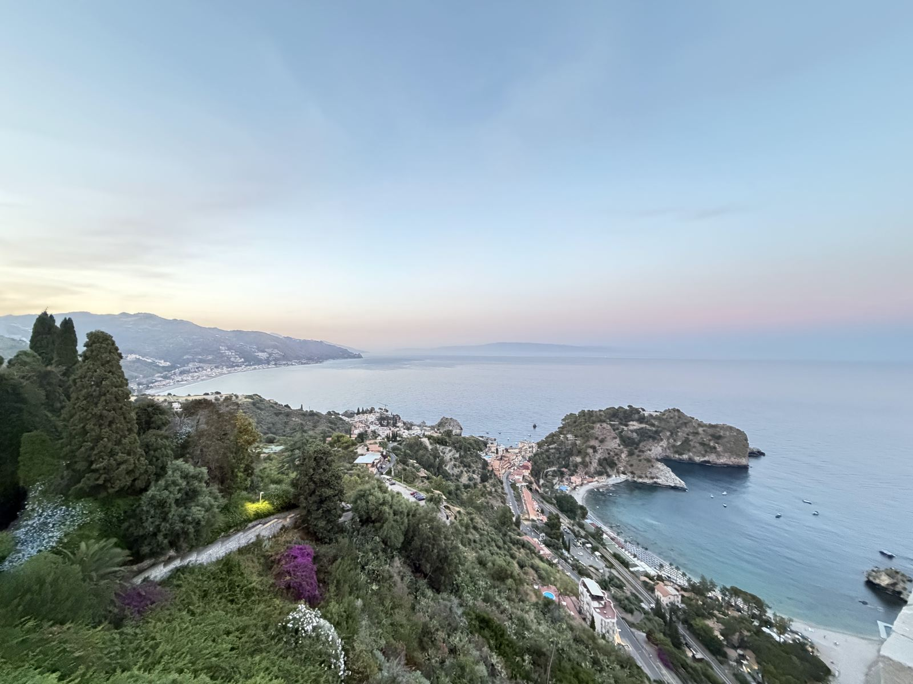
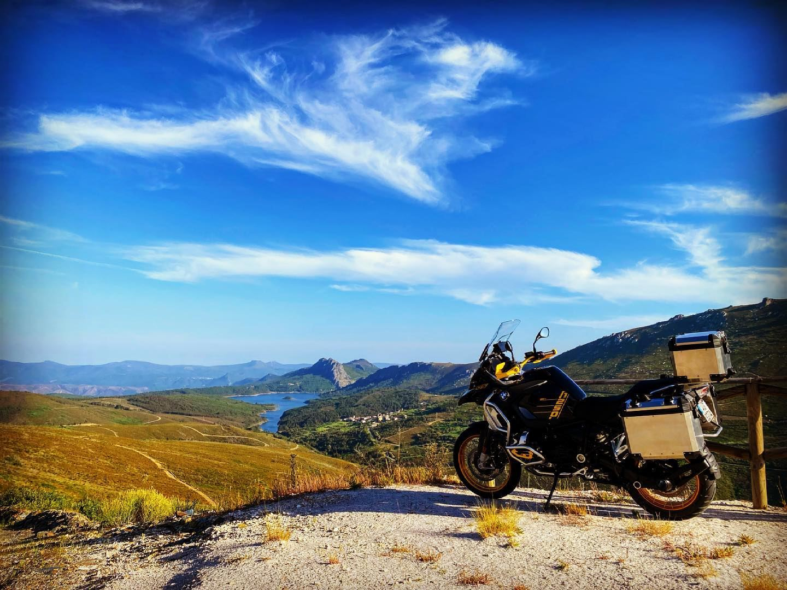

Miguel Teles de Amorim
Miguel Teles de Amorim
Portuguese lawyer, now leading eDiscovery and compliance technology at BMW Group in Munich. Here: my career, photographs from 38 countries, and the motorcycles and cars I have owned.

38 countries · 249 cities and places Travel memories Landmarks and landscapes in 1082 photographs, 2010–2026.
7 motorcycles and scooters · 4 cars Vehicles motorcycles and cars Everything I have owned since 2013, in 201 photographs.